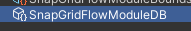

Setup Key-Locks
In this section, we'll add a few key-locks to our dungeon using the flow framework
Open up the flow graph and assign the module database like before
Create Treasure Room
We'll create a treasure room that is attached to the main path. We do this by creating a new path (of length 1) that emits out of the main path
Add a new Create Path node and link it to the end as shown:
Select the node and inspect the properties
Set the Min/Max size to
1since we want a single room to hold the keySet the path name to
treasure. We'll use this id later to place a key hereStart from Pathis set tomainso this room is connected to the main pathWe want the treasure room to be isolated and don't want it to converge back to another path. Leave the
End on Pathparameter blankChange the
Node Colorto anything you like
Hit Build and you'll see a new treasure room created
Treasure Room Key/Lock
We want to lock the treasure room and have the key somewhere in the main path
Add a new Create Key/Lock node and link it to the end like shown below:
Select the Create Key/Lock node and inspect the properties
Key Path- Since we want the key to be in the main path, set this tomainLock Path- Since we want to lock the treasure path, set this totreasureKey Marker Name- We'll use the Theme Editor to spawn the key prefab. Set the maker name to anything you like, however you'll need to create a corresponding marker node with the same name in the theme file to spawn the key prefab. For this tutorial, set this toKeyYellowLock Marker Name- We'll use the Snap Connection prefab to spawn the locked door prefab. Set the marker name to anything you like, however you'll need to create a corresponding mapping in the snap connection to spawn the locked door prefab. For this tutorial, set this toLockYellow
Hit Build and inspect the layout graph
A blue lock item was created on the link that connects to the yellow treasure node. The key was placed somewhere in the main path (green). The red arrow shows the key-lock relationship
Main Path Key-Lock
We'll create another key lock for the main path. The key would be in the alt path (orange) and the lock would be somewhere in the main path (green).
Add a new Create Key/Lock node and link it to the end as shown below:
Update the parameters:
Parameter | Value |
|---|---|
Key Path | alt |
Lock Path | main |
Key Marker Name | KeyRed |
Lock Marker Name | LockRed |
Description | Main Path |
Hit Build and inspect the layout graph
Spawn Keys
Setup Theme File
Open up the theme file we created earlier
Create a marker node ane rename it to KeyRed

Create another marker node and name it KeyYellow
We'll place our key prefabs under these.
Navigate to Assets\CodeRespawn\DungeonArchitect_Samples\DemoBuilder_GridFlow\Art\Prefab and drop in the KeySkull_Red and KeySkull_Yellow prefabs on to the theme editor and link them up
With this mapping, we've defined what key prefab to spawn. Next, we'll create a placeable marker asset to define where to spawn these inside the modules
Create a Placeable Marker
Create a new placeable marker asset and name it PM_Keys
Select the PM_Keys asset and inspect the properties
Add two markers
KeyRedandKeyYellowSet the Debug Color to yellow
Set the Debug Text to
Keys
Place Key Markers
Open up all your room modules and drop in the PM_Key placeable marker asset, similar to what we've done with the enemy placeable marker in the previous section
Drop in at least 2 of these in a room, in case if both the Red and the Yellow keys spawn in the same room
Either move this placeable marker game object up by 1 unit (so the key doesn't spawn buried half into the ground), or move the key up in the theme editor by selecting the key nodes and moving it up at Y by 1 unit
Add to the other room modules as well
Recompile module database
Since we've modified the module's markers, we need to rebuild the module database cache
Select the module database and click Build Module Cache

The system now knows where to spawn the keys in the snap module and what prefabs to spawn at those locations
Spawn Locks
Locks are door prefab with locking support (optionally with different visuals based on your art asset)
We'll setup these locked door prefab in the snap connection
Open Snap Connection Prefab
Open the Snap Connection prefab that we created in the earlier section
Inspect the properties of the prefab
Setup Locked Door
Similar to the way we've previously setup the one-way door, we'll setup two locked doors
Create an empty game object and rename it to LockRed. Place it along side the Wall, Door and DoorOneWay game objects

Reset the transform
We'll now register this game object as a locked door with the marker name as LockRed
Select the root Snap Connection object and inpect the properties
Add a new entry to the Locked Doors array and set the marker name to LockRed and assign the game object to it
Repeat the same for the yellow lock. Set the marker name to LockYellow, create a new gameobject, reset the transform and assign it
Assign Lock prefabs
Navigate to Assets\CodeRespawn\DungeonArchitect_Samples\DemoBuilder_GridFlow\Art\Prefab and drop in DoorLargeLocked_Red prefab as a child of LockRed game object
The alignment rules are the same like other doors. Reset the transform of the red door prefab and it should align correctly (red line should face outwards and the origin is in the bottom-center)
Do the same for the yellow lock.
Hide the LockRed game object
Drop in the DoorLargeLocked_Yellow prefab under the LockYellow gameobject
The alignment rules are the same like other doors. Reset the transform of the yellow door prefab and it should align correctly (red line should face outwards and the origin is in the bottom-center)
Hide the LockYellow game object
Build dungeon
Open the scene where we previously set up our dungeon. Rebuild the dungeon
Red lock guarding the main path:
Yellow lock guarding the treasure room:
Red Key:
Yellow Key: